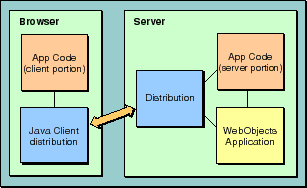

PATH
WebObjects 4.0 Documentation >
WebObjects Developer's Guide
 Table of Contents
Table of Contents  Previous Section
Previous Section
Java Client-Based WebObjects Applications
Figure 5 shows a client browser communicating with a WebObjects server while running a Java Client application. The portion of your application that runs in the browser is linked to an EOJavaClient object. The portion that runs on the server is similarly linked to an EODistribution object. These two objects handle communications between the client and the server, allowing both portions of your application to focus on implementing your application's business logic.

Figure 5. Chain of Communication Between the Browser and a Java Client-based WebObjects Application
Note: The techniques used in creating the Java Client portions of your WebObjects applications are documented in greater detail in the Enterprise Objects Framework Developer's Guide. The remainder of this book deals with those aspects of WebObjects that are common to all WebObjects applications.
Table of Contents  Next Section
Next Section